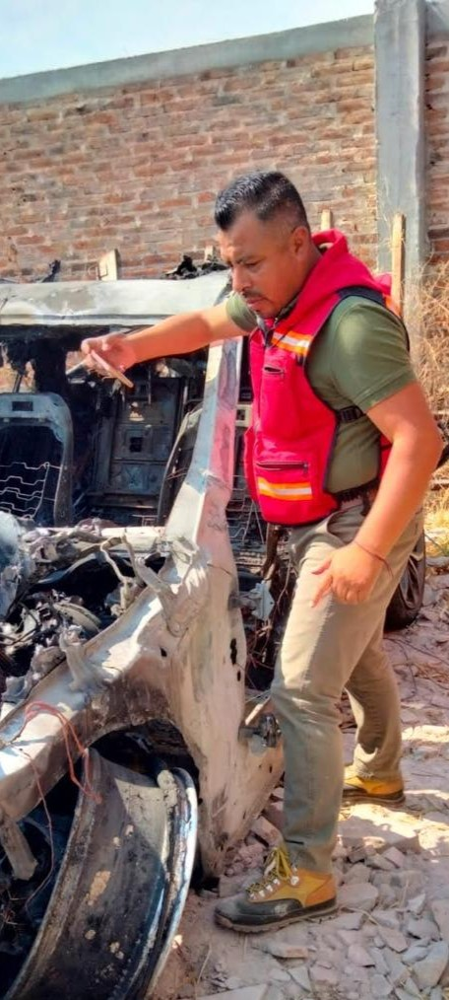
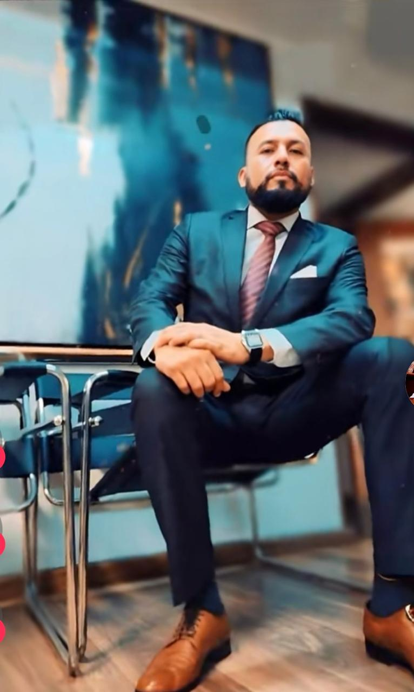
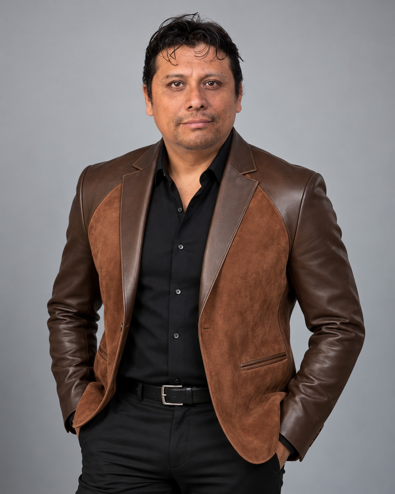
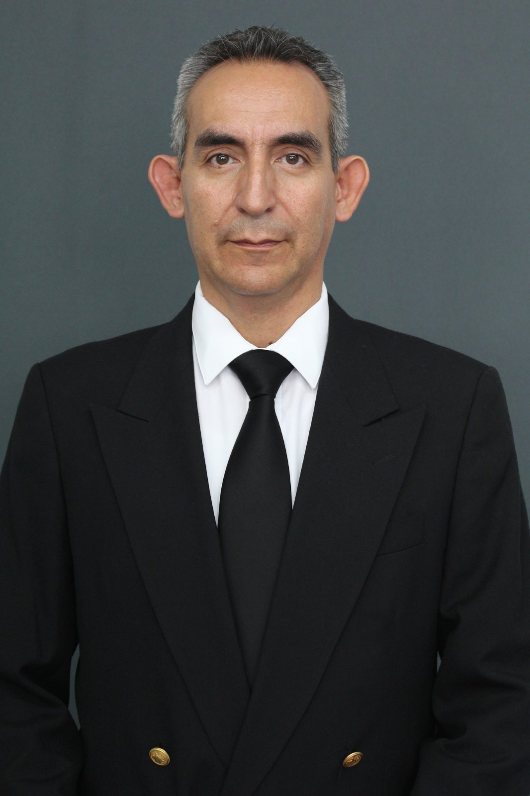
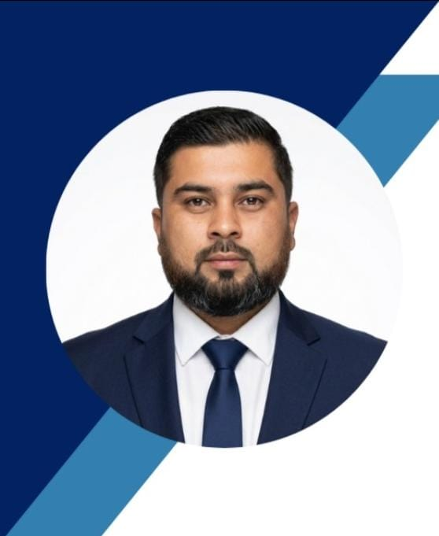

René Cruz
+52 33 2078 0878
Peritaje y análisis de tránsito, identificación vehicular y ajuste de siniestros
Técnico en Administración, Licenciado en Derecho y Criminalística, Maestrías en Educación y Litigación Oral, Certificación en Peritaje de Tránsito.
Cuenta con experiencia en docencia e investigación en métodos de investigación criminal, participando en proyectos relacionados con análisis científico.
EI Maestro René Cruz Ramlrez es un destacado profesionista en el ámbito juridico y forense, con una sólida formación multidisciplinaria que integra el Derecho, la Criminologla y la Administración de Empresas.
Silvia Contreras
+52 55 2008 8707
Investigadora técnico - científica de incendios y explosiones
Formación profesional en Técnicas de Investigación de Incendios Fl 1B Intermedio, Origen y Causa de los Incendios Fl 1A y Técnico en Intervención de Campo.
Ha colaborado en capacitación y formación de investigadores, peritos, cuerpos de bomberos, personal de protección civil y profesionales del ejecicio libre.
Actualmente se desempeña como perito particular en investigación técnico - científica de incendios y explosiones, desarrollando actividades de investigación y asesoría técnica en el ámbito privado.

Arturo Sandoval
+52 33 2942 3489
Consultoría profesional
Profesional formado en la Universidad de Veracruz, con preparación adicional en la Universidad Automana de México.
Participación en la presidencia del Colegio de Abogados de Jalisco, representación legal de asociaciones civiles y coordinación nacional en defensa penal.
Abogado penalista con amplia trayectoria en defensa jurídica, liderazgo en asociaciones civiles y coordinación en bioética y responsabilidad médica. Actualmente combina la práctica profesional con la docencia universitaria.

Daniel Chávez
+52 33 2938 1887
+52 33 1216 8627
TSU en mantenimiento de maquinaria pesada
Cuenta con posdoctorado y doctorado en ciencias forenses, maestría en administración estratégica e ingeniería en mantenimiento industrial.
Con una experiencia desde el 2016 en áreas periales y ciberseguridad, además de 14 años en el ramo de la maquinaria pesada y la construcción.
Actualmente es CEO y Fundador de Asesorías Técnicas en Periciales, empresa dedicada al servicio de asesoría técnica y dictaminación pericial en diversas ramas del conocimiento. Su labor incluye la investigación inicial y análisis de viabilidad de casos, así como la formulación de opiniones técnicas especializadas que respaldan procesos legales y técnicos.

Sergio Tinajero
477 677 77 22
Módulo de especialización para la unidad de delitos patrimoniales
Profesional formado en la Universidad del Centro de México, con preparación adicional en el Instituto de Capacitacion Computacional de León y en el Colegio Libre de Estudios Universitarios, CLEU.
Cuenta con experiencia como criminalista y perito forense, desempeñándose en áreas de fotografía forense, dactiloscopía avanzada en sistema AFIS, análisis de información y revisión vehicular.
Cuenta con una sólida trayectoria en criminología y ciencias forenses, respaldada por la Licenciatura en Criminología en la Universidad UCEM. Complementa su formación con estudios en computación como Programador Analista de Sistemas. Además es autor del libro “Fotografía Forense” presentado en 2019.

José Cruz
+52 33 3170 2190
Especialidad en criminalística
Cuenta con licenciatura en criminología, maestría en investigación criminal en ciencias forenses, especialidad en criminalística y licenciatura en derecho.
Experiencia en el ámbito jurídico, forense y administrativo, con trayectoria en instituciones de justicia, seguridad pública, análisis de información, radiocomunicación y videovigilancia.
Cuenta con una amplia trayectoria en el ámbito jurídico, forense y administrativo, desempeñándose en instituciones de justicia, seguridad pública y análisis de información. Ha colaborado en áreas de radiocomunicación, videovigilancia y atención de emergencias. Su experiencia se complementa con labores en el sector asegurador, gestión vehicular y capacitación en gestiones jurídicas.
Maricela Cervantes
044 33 3106 6524
Maestría en litigación oral, penal y criminalística
Profesional formado en la Universidad de Guadalajara con preparación adicional en el Centro Universitario Tapatío CUT.
Cuenta con una sólida trayectoria en el ámbito jurídico y forense, destacando como miembro activo del Colegio de Abogados en Juicios Orales del Estado de Jalisco.
Ha sido certificada en lofoscopia forense por ICITAP, usuaria del sistema AFIS y responsable de procesos de calidad y acreditación en laboratorios especializados. Además, ha tenido asistencia a cursos, diplomados y conferencias a partir del año 1992 y en la actualidad.
Alexis Guerrero
222 202 4926
Especialista en Inteligencia OSINT/CLOINT
Cuenta con Licenciatura en Psicología, Diplomado y acreditación como perito en identificación vehicular, además de cursos y capacitaciónes el el área pericial, psicológica y de inteligencia e investigación.
Cuenta con experiencia en revisión y análisis de números de identificación vehicular (NIV/VIN), detección de alteraciones físicas o químicas, verificación documental, evaluación psicológica y elaboración de informes con rigor metodológico.
Ofrece servicios técnicos, confidenciales y orientados a la toma de decisiones para personas, empresas, despachos jurídicos, aseguradoras, instituciones de seguridad y organismos públicos o civiles. Ha desarrollado una herramienta pericial, orientada a optimizar procesos de identificación vehicular, análisis técnico y elaboración de informes, llamada "Bot Pericial AUTOID".